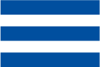

Contatti

Ski System Cortina
Via Faloria 23 – 32043
Cortina d’Ampezzo (mappa)
T: +39 0436 4283
E: contatti@skisystem.com
Paolo Stefani
Lezioni di sci individuali o di gruppo:
+39 3471734555
Via Faloria 23 – 32043
Cortina d’Ampezzo (mappa)
T: +39 0436 4283
E: contatti@skisystem.com
Paolo Stefani
Lezioni di sci individuali o di gruppo:
+39 3471734555
Il team di Ski System:
↳ Paolo Stefani
↳ Walter Alverà
↳ Kitty
↳ Max
Web design:
↳ Jetlag Alliance
Animation:
↳ Mattia “Kollo” Ceron
↳ Paolo Stefani
↳ Walter Alverà
↳ Kitty
↳ Max
Web design:
↳ Jetlag Alliance
Animation:
↳ Mattia “Kollo” Ceron
Walter Alverà
Walter è un’esperto skiman, la sua preparazione è maturata direttamente sul campo di gara, la dove la cura per la preparazione degli attrezzi è fondamentale per essere competitivi. Dal 1991 al 1994 ha svolto l’attività di skiman nella squadra nazionale B di discesa, seguendo atleti di assoluto livello.
Paolo Stefani
Alla passione e all’esperienza, Paolo aggiunge un trascorso agonistico importante: ha fatto parte del Centro Sportivo Forestale e del Centro Sportivo Esercito, maestro di sci dal 1981 e allenatore di terzo livello, con mansioni nei più importanti sci club di Cortina d’Ampezzo.
© 2020 NOLEGGIO SCI SKI SYSTEM DI PAOLO STEFANI E C. S.N.C.
VIA FALORIA, 23 – 32043 CORTINA D'AMPEZZO – P. IVA 00827380254
VIA FALORIA, 23 – 32043 CORTINA D'AMPEZZO – P. IVA 00827380254